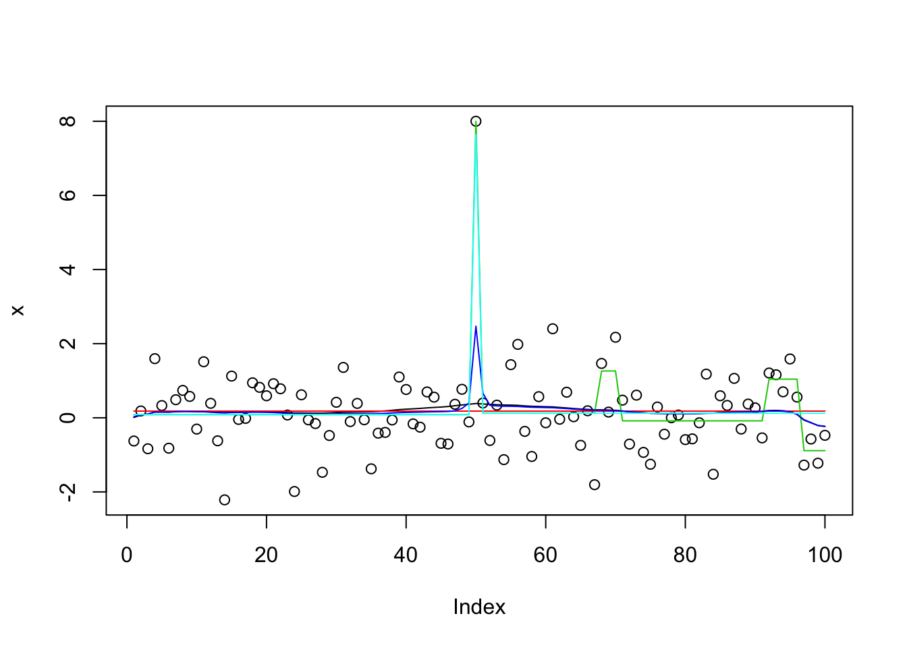
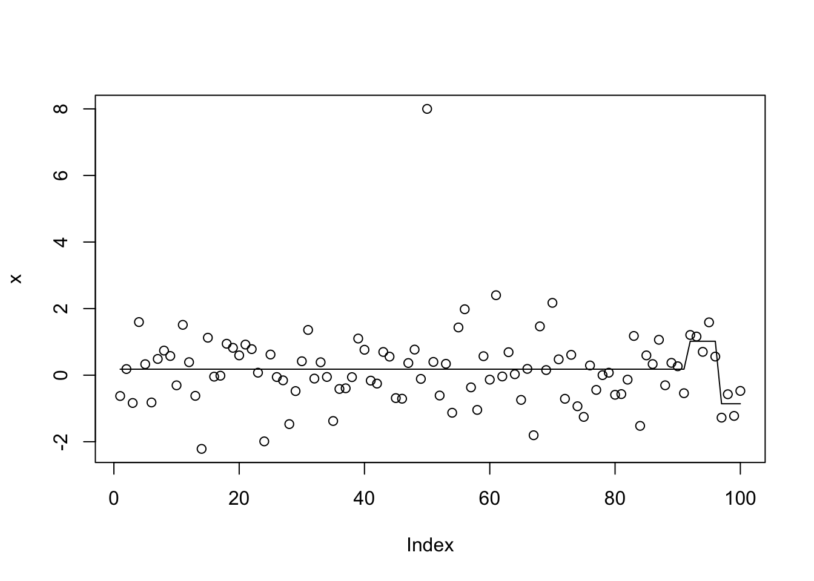
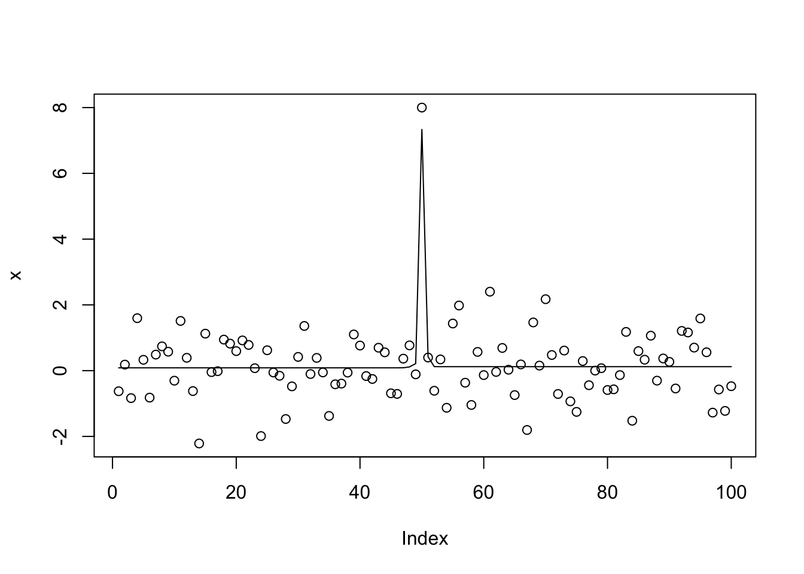
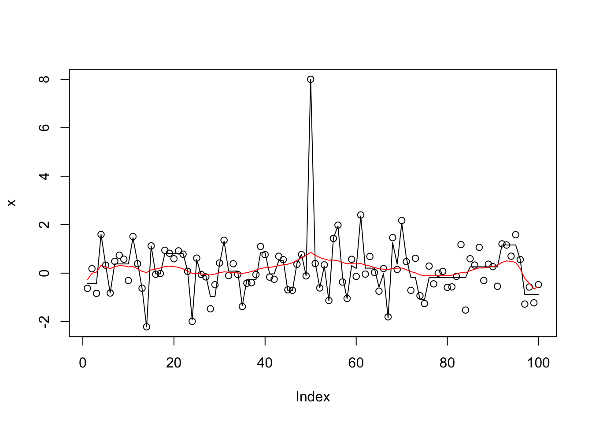
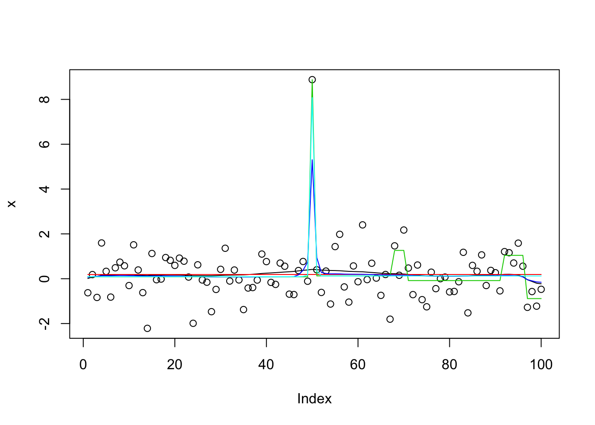
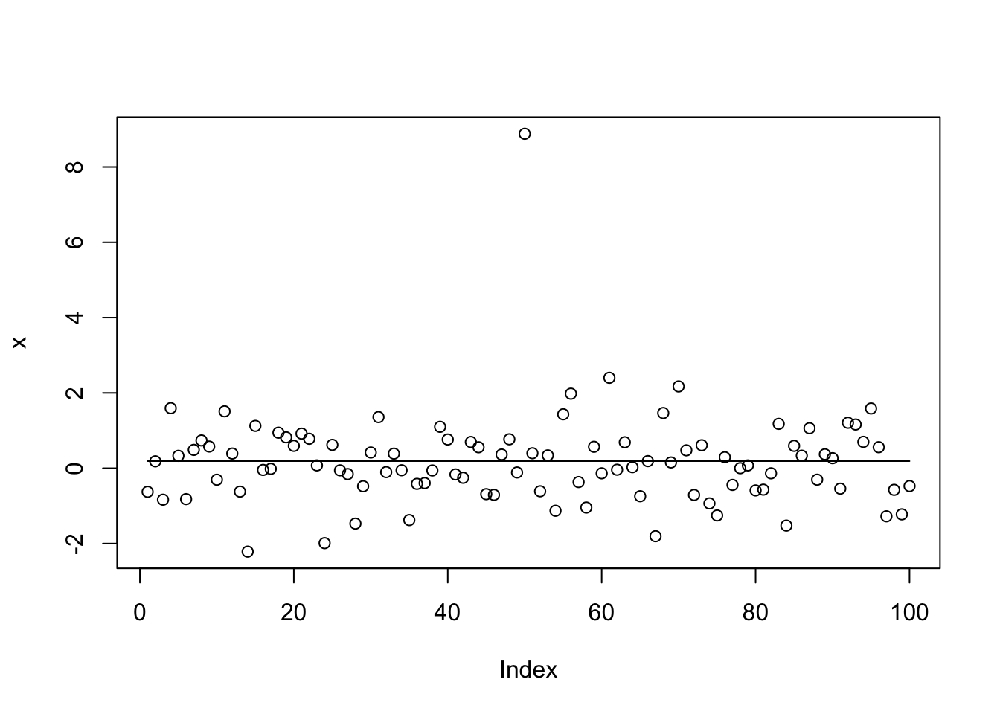
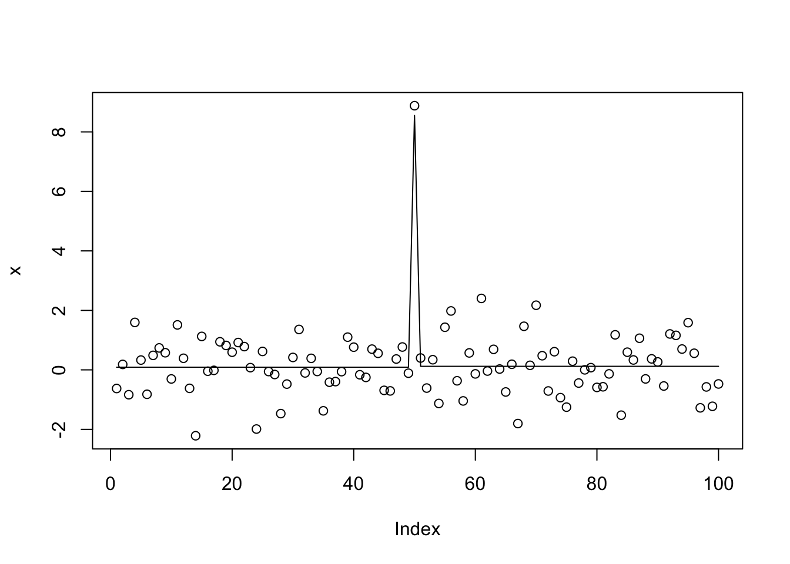
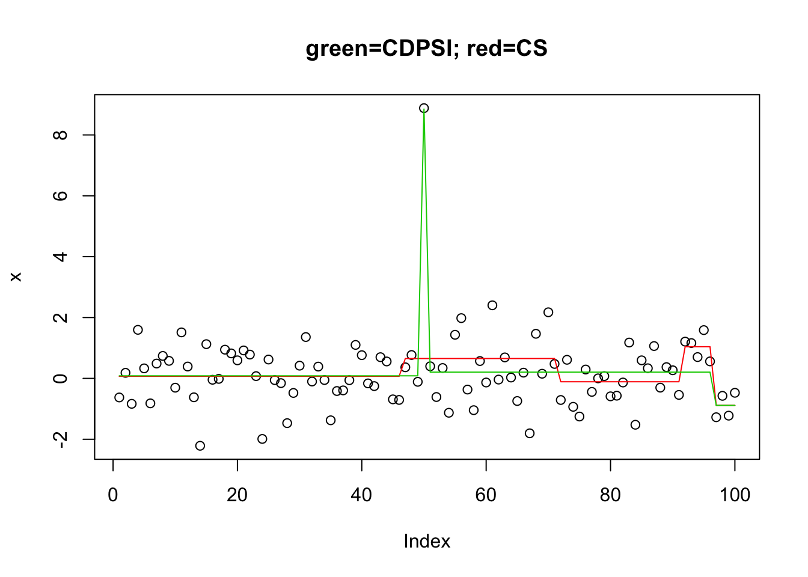

Last updated: 2018-10-23
workflowr checks: (Click a bullet for more information) ✔ R Markdown file: up-to-date
Great! Since the R Markdown file has been committed to the Git repository, you know the exact version of the code that produced these results.
✔ Environment: empty
Great job! The global environment was empty. Objects defined in the global environment can affect the analysis in your R Markdown file in unknown ways. For reproduciblity it’s best to always run the code in an empty environment.
✔ Seed:
set.seed(20180414)
The command set.seed(20180414) was run prior to running the code in the R Markdown file. Setting a seed ensures that any results that rely on randomness, e.g. subsampling or permutations, are reproducible.
✔ Session information: recorded
Great job! Recording the operating system, R version, and package versions is critical for reproducibility.
✔ Repository version: 1cb3dbd
wflow_publish or wflow_git_commit). workflowr only checks the R Markdown file, but you know if there are other scripts or data files that it depends on. Below is the status of the Git repository when the results were generated:
Ignored files:
Ignored: .DS_Store
Ignored: .Rhistory
Ignored: .Rproj.user/
Ignored: analysis/.Rhistory
Untracked files:
Untracked: analysis/null.Rmd
Untracked: analysis/test.Rmd
Untracked: data/geneMatrix.tsv
Untracked: data/liter_data_4_summarize_ld_1_lm_less_3.rds
Untracked: data/meta.tsv
Untracked: docs/figure/test.Rmd/
| File | Version | Author | Date | Message |
|---|---|---|---|---|
| Rmd | 1cb3dbd | stephens999 | 2018-10-23 | workflowr::wflow_publish(c(“analysis/cp_convergence.Rmd”, |
Here we look at a simple but challenging example for convergence.
It is based on the changepoint problem.
First some code for running susie on changepoint problems:
library("susieR")
susie_cp = function(y,auto=FALSE,...){
n=length(y)
X = matrix(0,nrow=n,ncol=n-1)
for(j in 1:(n-1)){
for(i in (j+1):n){
X[i,j] = 1
}
}
if(auto){
s = susie_auto(X,y,...)
} else {
s = susie(X,y,...)
}
return(s)
}The following shows how initialization matters (and also how susie_auto does not find the optimal solution).
set.seed(1)
x = rnorm(100)
x[50]=8
x.s = susie_cp(x)
x.s.auto = susie_cp(x,auto=TRUE)
x.s.small = susie_cp(x,estimate_residual_variance=FALSE,residual_variance=0.001)
x.s.small2 = susie_cp(x,estimate_residual_variance=TRUE,s_init = x.s.small)
x.s.small3 = susie_cp(x,estimate_residual_variance=TRUE,estimate_prior_variance = TRUE, s_init = x.s.small2)
plot(x)
lines(predict(x.s),col=1)
lines(predict(x.s.auto),col=2)
lines(predict(x.s.small),col=3)
lines(predict(x.s.small2),col=4)
lines(predict(x.s.small3),col=5)
get_obj = function(s){
return(s$elbo[length(s$elbo)])
}
get_obj(x.s)[1] -172.8635get_obj(x.s.auto)[1] -159.0861get_obj(x.s.small)[1] -32931.5get_obj(x.s.small2)[1] -175.5246get_obj(x.s.small3)[1] -148.0106It turns out the explanation for why susie_auto does not work here is multi-fold. First, by default it uses L=1 first. When that results in no signal it stops. Second, even if we change that to L=2, it picks up a (false) signal at the end of the time series in its initial run. Then it zeros that out during refitting, and stops.
This mimics initial fit of susie_auto with L=2 and illustrates:
init_tol= 1
standardize = TRUE
intercept = TRUE
tol = 0.01
L=2
Y=x
max_iter = 100
s.0 = susie_cp(Y, L = L, residual_variance = 0.01 * sd(Y)^2,
tol = init_tol, scaled_prior_variance = .1, estimate_residual_variance = FALSE,
estimate_prior_variance = FALSE, standardize = standardize,
intercept = intercept, max_iter = max_iter)
plot(x)
lines(predict(s.0))
I thought that setting L_init=10 would fix this. It kind of does, but actually ends up splitting the signal between 3 CSs, resulting in a worse objective.
x.s.auto10 = susie_cp(x,auto=TRUE,L_init=10)
get_obj(x.s.auto10)[1] -176.389get_obj(x.s.small3)[1] -148.0106plot(x)
lines(predict(x.s.auto10))
susie_get_CS(x.s.auto10,dedup=FALSE)$cs
$cs[[1]]
[1] 1 2 3 4 5 6 7 8 9 10 11 12 13 14 15 16 17 18 19 20 21 22 23
[24] 24 25 26 27 28 29 30 31 32 33 34 35 36 37 38 39 40 41 42 43 44 45 46
[47] 47 48 49 50 51 52 53 54 55 56 57 58 59 60 61 62 63 64 65 66 67 68 69
[70] 70 71 72 73 74 75 76 77 78 79 80 81 82 83 84 85 86 87 88 89 90 91 92
[93] 93 94 95
$cs[[2]]
[1] 49
$cs[[3]]
[1] 50
$cs[[4]]
[1] 1 2 3 4 5 6 7 8 9 10 11 12 13 14 15 16 17 18 19 20 21 22 23
[24] 24 25 26 27 28 29 30 31 32 33 34 35 36 37 38 39 40 41 42 43 44 45 46
[47] 47 48 49 50 51 52 53 54 55 56 57 58 59 60 61 62 63 64 65 66 67 68 69
[70] 70 71 72 73 74 75 76 77 78 79 80 81 82 83 84 85 86 87 88 89 90 91 92
[93] 93 94 95
$cs[[5]]
[1] 49
$cs[[6]]
[1] 1 2 3 4 5 6 7 8 9 10 11 12 13 14 15 16 17 18 19 20 21 22 23
[24] 24 25 26 27 28 29 30 31 32 33 34 35 36 37 38 39 40 41 42 43 44 45 46
[47] 47 48 49 50 51 52 53 54 55 56 57 58 59 60 61 62 63 64 65 66 67 68 69
[70] 70 71 72 73 74 75 76 77 78 79 80 81 82 83 84 85 86 87 88 89 90 91 92
[93] 93 94 95
$cs[[7]]
[1] 1 2 3 4 5 6 7 8 9 10 11 12 13 14 15 16 17 18 19 20 21 22 23
[24] 24 25 26 27 28 29 30 31 32 33 34 35 36 37 38 39 40 41 42 43 44 45 46
[47] 47 48 49 50 51 52 53 54 55 56 57 58 59 60 61 62 63 64 65 66 67 68 69
[70] 70 71 72 73 74 75 76 77 78 79 80 81 82 83 84 85 86 87 88 89 90 91 92
[93] 93 94 95
$cs[[8]]
[1] 50 51
$cs[[9]]
[1] 49
$cs[[10]]
[1] 50
$coverage
[1] 0.95x.s.auto10$V [1] 0.000000 1.632027 1.692485 0.000000 1.423064 0.000000 0.000000
[8] 1.336395 1.502874 1.494424x.s.auto10$sigma2[1] 0.8609335x.s.small3$sets$cs
$cs$L2
[1] 50
$cs$L3
[1] 49
$purity
min.abs.corr mean.abs.corr median.abs.corr
L2 1 1 1
L3 1 1 1
$cs_index
[1] 2 3
$coverage
[1] 0.95x.s.small3$V [1] 0.00000 0.00000 0.00000 0.00000 0.00000 0.00000 0.00000
[8] 0.00000 14.31169 14.44124I found it interesting that when we fit 10 effects, susie uses duplicates to fit the same features rather than fit new features. However, if we up this it does eventually start fitting most of the features (actually noise) in the data. Furthermore, when we use this to initialize it zeros out the main signal. I am guessing this is because of all the duplication none of the effects looks “significant”. This happens whether or not we estimate the prior variance. It suggests we may want to avoid duplicates in the original fit before refining.
x.s0.L100 = susie_cp(x,estimate_residual_variance=FALSE,residual_variance=0.001,L=100)
x.s1.L100 = susie_cp(x,estimate_residual_variance=TRUE,s_init=x.s0.L100)
x.s2.L100 = susie_cp(x,estimate_residual_variance=TRUE, estimate_prior_variance=TRUE,s_init=x.s0.L100)
plot(x)
lines(predict(x.s0.L100))
lines(predict(x.s1.L100),col=2)
I thought maybe we could use the objective to catch when to stop increasing \(L\), but actually with very small residual variance the objective keeps increasing with L (obvious with hindsight).
Lseq = c(2,4,8,16,32,64)
x.L = list()
for(l in 1:length(Lseq)){
x.L[[l]] = susie_cp(x,estimate_residual_variance=FALSE,residual_variance=0.001,L=Lseq[l])
}
lapply(x.L,get_obj)[[1]]
[1] -66146.56
[[2]]
[1] -35309.13
[[3]]
[1] -32921.31
[[4]]
[1] -30555.64
[[5]]
[1] -22088.78
[[6]]
[1] -11077.72It is worth noting that all these results turn out to be very delicate… if you change the code to x[50] = x[50]+8 rather than x[50]=8 the objective for x.s.small3 is much worse (because it also has duplication problems i think)
set.seed(1)
x = rnorm(100)
x[50]=x[50]+8
x.s = susie_cp(x)
x.s.auto = susie_cp(x,auto=TRUE)
x.s.small = susie_cp(x,estimate_residual_variance=FALSE,residual_variance=0.001)
x.s.small2 = susie_cp(x,estimate_residual_variance=TRUE,s_init = x.s.small)
x.s.small3 = susie_cp(x,estimate_residual_variance=TRUE,estimate_prior_variance = TRUE, s_init = x.s.small2)
plot(x)
lines(predict(x.s),col=1)
lines(predict(x.s.auto),col=2)
lines(predict(x.s.small),col=3)
lines(predict(x.s.small2),col=4)
lines(predict(x.s.small3),col=5)
get_obj(x.s)[1] -177.78get_obj(x.s.auto)[1] -163.9949get_obj(x.s.small)[1] -32934.03get_obj(x.s.small2)[1] -188.1544get_obj(x.s.small3)[1] -177.2This example is also challenging for trendfiltering:
library("genlasso")Loading required package: MatrixLoading required package: igraph
Attaching package: 'igraph'The following objects are masked from 'package:stats':
decompose, spectrumThe following object is masked from 'package:base':
uniontf_cp = function(x){
x.tf = trendfilter(x,ord=0)
x.tf.cv = cv.trendfilter(x.tf)
opt = which(x.tf$lambda==x.tf.cv$lambda.min) #optimal value of lambda
x.tf.fit= x.tf$fit[,opt]
return(x.tf.fit)
}
x.tf.fit = tf_cp(x)Fold 1 ... Fold 2 ... Fold 3 ... Fold 4 ... Fold 5 ... plot(x)
lines(x.tf.fit) One possible issue here is that in the CV, because the changepoints involve only one observation point, the changepoint will always be present only in either the training or test sets. (Another possible problem is that to keep the cv error low the L1 penalty has to be strong, so it overshrinks the signal and decides that it is not “significant”.)
Here we do “backfitting” of susie to the trendfilter solution (with L=10):
x.tf = trendfilter(x,ord=0)
bhat = x.tf$beta[,10]
dhat = diff(bhat)
dhat = ifelse(abs(dhat)>1e-8, dhat,0)
s0 = susie_init_coef(which(dhat!=0),dhat[dhat!=0],length(x)-1)
x.s0 = susie_cp(x,s_init = s0, estimate_prior_variance=TRUE)
plot(x)
lines(predict(x.s0))
get_obj(x.s0)[1] -148.2271I tried L0learn on this challenging problem. The coordinate descent algorithm did not do well. The other algorithm (CDPSI) did ok in that the solution with 3 points includes the two true changepoints. But I could not get it to give a solution with only 2 points (I tried a manual grid of 1000 lambda values near the change from 1 to 3 support points).
library("L0Learn")
n = length(x)
X = matrix(0,nrow=n,ncol=n-1)
for(j in 1:(n-1)){
for(i in (j+1):n){
X[i,j] = 1
}
}
y.l0.CS = L0Learn.fit(X,x,penalty="L0",maxSuppSize = 100,autoLambda = FALSE,lambdaGrid = list(seq(0.01,0.001,length=100)),algorithm="CS")
y.l0.CS$suppSize[[1]]
[1] 1 1 1 1 1 1 1 1 1 1 1 1 1 1 1 1 1 1 1 1 1 1 1
[24] 1 1 1 1 1 4 4 4 4 4 4 4 5 5 5 5 5 5 5 5 5 5 5
[47] 5 5 5 5 5 5 5 5 5 5 5 5 5 5 5 5 5 5 5 5 5 5 5
[70] 5 5 5 5 5 5 5 5 5 5 5 5 5 8 8 8 8 8 8 8 8 8 8
[93] 8 8 15 15 15 15 17 17y.l0.CDPSI = L0Learn.fit(X,x,penalty="L0",maxSuppSize = 100,autoLambda = FALSE,lambdaGrid = list(seq(0.0076,0.0075,length=1000)),algorithm="CDPSI")
y.l0.CDPSI$suppSize[[1]]
[1] 1 1 1 1 1 1 1 1 1 1 1 1 1 1 1 1 1 1 1 1 1 1 1 1 1 1 1 1 1 1 1 1 1 1
[35] 1 1 1 1 1 1 1 1 1 1 1 1 1 1 1 1 1 1 1 1 1 1 1 1 1 1 1 1 1 1 1 1 1 1
[69] 1 1 1 1 1 1 1 1 1 1 1 1 1 1 1 1 1 1 1 1 1 1 1 1 1 1 1 1 1 1 1 1 1 1
[103] 1 1 1 1 1 1 1 1 1 1 1 1 1 1 1 1 1 1 1 1 1 1 1 1 1 1 1 1 1 1 1 1 1 1
[137] 1 1 1 1 1 1 1 1 1 1 1 1 1 1 1 1 1 1 1 1 1 1 1 1 1 1 1 1 1 1 1 1 1 1
[171] 1 1 1 1 1 1 1 1 1 1 1 1 1 1 1 1 1 1 1 1 1 1 1 1 1 1 1 1 1 1 1 1 1 1
[205] 1 1 1 1 1 1 1 1 1 1 1 1 1 1 1 1 1 1 1 1 1 1 1 1 1 1 1 1 1 1 1 1 1 1
[239] 1 1 1 1 1 1 1 1 1 1 1 1 1 1 1 1 1 1 1 1 1 1 1 1 1 1 1 1 1 1 1 1 1 1
[273] 1 1 1 1 1 1 1 1 1 1 1 1 1 1 1 1 1 1 1 1 1 1 1 1 1 1 1 1 1 1 1 1 1 1
[307] 1 1 1 1 1 1 1 1 1 1 1 1 1 1 1 1 1 1 1 1 1 1 1 1 1 1 1 1 1 1 1 1 1 1
[341] 1 1 1 1 1 1 1 1 1 1 1 1 1 1 1 1 1 1 1 1 1 1 1 1 1 1 1 1 1 1 1 1 1 1
[375] 1 1 1 1 1 1 1 1 1 1 1 1 1 1 1 1 1 1 1 1 1 1 1 1 1 1 1 1 1 1 1 1 1 1
[409] 1 1 1 1 1 1 1 1 1 1 1 1 1 1 1 1 1 1 1 1 1 1 1 1 1 1 1 1 1 1 1 1 1 1
[443] 1 1 1 1 1 1 1 1 1 1 1 1 1 1 1 1 1 1 1 1 1 1 1 1 1 1 1 1 1 1 1 1 1 1
[477] 1 1 1 1 1 1 1 1 1 1 1 1 1 1 1 1 1 1 1 1 1 1 1 1 1 1 1 1 1 1 1 1 1 1
[511] 1 1 1 1 1 1 1 1 1 1 1 1 1 1 1 1 1 1 1 1 1 1 1 1 1 1 1 1 1 1 1 1 1 1
[545] 1 1 1 1 1 1 1 1 1 1 1 1 1 1 1 1 1 1 1 1 1 1 1 1 1 1 1 1 1 1 1 1 1 1
[579] 1 1 1 1 1 1 1 1 1 1 1 1 1 1 1 1 1 1 1 1 1 1 1 1 1 1 1 1 1 1 1 1 1 1
[613] 1 1 1 1 1 1 1 1 1 1 1 1 1 1 1 1 1 1 1 1 1 1 1 1 1 1 1 1 1 1 1 1 1 1
[647] 1 1 1 1 1 1 1 1 1 1 1 1 1 1 1 1 1 1 1 1 1 1 1 1 1 1 1 1 1 3 3 3 3 3
[681] 3 3 3 3 3 3 3 3 3 3 3 3 3 3 3 3 3 3 3 3 3 3 3 3 3 3 3 3 3 3 3 3 3 3
[715] 3 3 3 3 3 3 3 3 3 3 3 3 3 3 3 3 3 3 3 3 3 3 3 3 3 3 3 3 3 3 3 3 3 3
[749] 3 3 3 3 3 3 3 3 3 3 3 3 3 3 3 3 3 3 3 3 3 3 3 3 3 3 3 3 3 3 3 3 3 3
[783] 3 3 3 3 3 3 3 3 3 3 3 3 3 3 3 3 3 3 3 3 3 3 3 3 3 3 3 3 3 3 3 3 3 3
[817] 3 3 3 3 3 3 3 3 3 3 3 3 3 3 3 3 3 3 3 3 3 3 3 3 3 3 3 3 3 3 3 3 3 3
[851] 3 3 3 3 3 3 3 3 3 3 3 3 3 3 3 3 3 3 3 3 3 3 3 3 3 3 3 3 3 3 3 3 3 3
[885] 3 3 3 3 3 3 3 3 3 3 3 3 3 3 3 3 3 3 3 3 3 3 3 3 3 3 3 3 3 3 3 3 3 3
[919] 3 3 3 3 3 3 3 3 3 3 3 3 3 3 3 3 3 3 3 3 3 3 3 3 3 3 3 3 3 3 3 3 3 3
[953] 3 3 3 3 3 3 3 3 3 3 3 3 3 3 3 3 3 3 3 3 3 3 3 3 3 3 3 3 3 3 3 3 3 3
[987] 3 3 3 3 3 3 3 3 3 3 3 3 3 3plot(x,main="green=CDPSI; red=CS")
lines(predict(y.l0.CS,newx=X,lambda=y.l0.CS$lambda[[1]][min(which(y.l0.CS$suppSize[[1]]>1))]),col=2)
lines(predict(y.l0.CDPSI,newx=X,lambda=y.l0.CDPSI$lambda[[1]][min(which(y.l0.CDPSI$suppSize[[1]]>1))]),col=3)
sessionInfo()R version 3.5.1 (2018-07-02)
Platform: x86_64-apple-darwin15.6.0 (64-bit)
Running under: OS X El Capitan 10.11.6
Matrix products: default
BLAS: /Library/Frameworks/R.framework/Versions/3.5/Resources/lib/libRblas.0.dylib
LAPACK: /Library/Frameworks/R.framework/Versions/3.5/Resources/lib/libRlapack.dylib
locale:
[1] en_US.UTF-8/en_US.UTF-8/en_US.UTF-8/C/en_US.UTF-8/en_US.UTF-8
attached base packages:
[1] stats graphics grDevices utils datasets methods base
other attached packages:
[1] L0Learn_1.0.7 genlasso_1.4 igraph_1.2.2 Matrix_1.2-14
[5] susieR_0.5.0.0347
loaded via a namespace (and not attached):
[1] Rcpp_0.12.19 bindr_0.1.1 compiler_3.5.1
[4] pillar_1.3.0 git2r_0.23.0 plyr_1.8.4
[7] workflowr_1.1.1 R.methodsS3_1.7.1 R.utils_2.7.0
[10] tools_3.5.1 digest_0.6.18 evaluate_0.12
[13] tibble_1.4.2 gtable_0.2.0 lattice_0.20-35
[16] pkgconfig_2.0.2 rlang_0.2.2 yaml_2.2.0
[19] bindrcpp_0.2.2 stringr_1.3.1 dplyr_0.7.7
[22] knitr_1.20 tidyselect_0.2.5 rprojroot_1.3-2
[25] grid_3.5.1 glue_1.3.0 R6_2.3.0
[28] rmarkdown_1.10 reshape2_1.4.3 purrr_0.2.5
[31] ggplot2_3.0.0 magrittr_1.5 whisker_0.3-2
[34] backports_1.1.2 scales_1.0.0 matrixStats_0.54.0
[37] htmltools_0.3.6 assertthat_0.2.0 colorspace_1.3-2
[40] stringi_1.2.4 lazyeval_0.2.1 munsell_0.5.0
[43] crayon_1.3.4 R.oo_1.22.0 This reproducible R Markdown analysis was created with workflowr 1.1.1